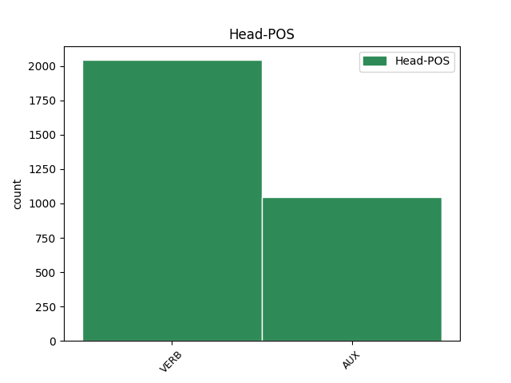

Distribution of features within this leaf

Agreement Rules sorted by frequency.
- When the dependent token is the direct object complements(comp:obj) of the head token,
1 est _ _ _ _ 0 _ _ _
2 autem _ _ _ _ 0 _ _ _
3 attendendum _ _ _ _ 0 _ _ _
4 quod _ _ _ _ 0 _ _ _
5 , _ _ _ _ 0 _ _ _
6 si _ _ _ _ 0 _ _ _
7 quis _ _ _ _ 0 _ _ _
8 poneret _ _ _ _ 0 _ _ _
9 animam _ _ _ _ 0 _ _ _
10 componi _ _ _ _ 0 _ _ _
11 ex _ _ _ _ 0 _ _ _
12 materia _ _ _ _ 0 _ _ _
13 et _ _ _ _ 0 _ _ _
14 forma _ _ _ _ 0 _ _ _
15 , _ _ _ _ 0 _ _ _
16 nullo _ _ _ _ 0 _ _ _
17 modo _ _ _ _ 0 _ _ _
18 posset _ _ _ _ 0 _ _ _
19 dicere dico VERB N3|modH|tem1 Tense=Pres|VerbForm=Inf|Voice=Act 0 _ _ _
20 animam _ _ _ _ 0 _ _ _
21 esse sum AUX N3|modH|tem1 Tense=Pres|VerbForm=Inf|Voice=Act 19 comp:obj _ _
22 formam _ _ _ _ 0 _ _ _
23 corporis _ _ _ _ 0 _ _ _
24 . _ _ _ _ 0 _ _ _
1 hoc _ _ _ _ 0 _ _ _
2 ergo _ _ _ _ 0 _ _ _
3 principium _ _ _ _ 0 _ _ _
4 quo _ _ _ _ 0 _ _ _
5 primo _ _ _ _ 0 _ _ _
6 intelligimus _ _ _ _ 0 _ _ _
7 , _ _ _ _ 0 _ _ _
8 sive _ _ _ _ 0 _ _ _
9 dicatur dico VERB N3|modK|tem1|gen6 Mood=Sub|Number=Sing|Person=3|Tense=Pres|VerbForm=Fin|Voice=Pass 15 mod _ _
10 intellectus _ _ _ _ 0 _ _ _
11 sive _ _ _ _ 0 _ _ _
12 anima _ _ _ _ 0 _ _ _
13 intellectiva _ _ _ _ 0 _ _ _
14 , _ _ _ _ 0 _ _ _
15 est sum AUX N3|modA|tem1|gen6 Mood=Ind|Number=Sing|Person=3|Tense=Pres|VerbForm=Fin|Voice=Act 0 _ _ _
16 forma _ _ _ _ 0 _ _ _
17 corporis _ _ _ _ 0 _ _ _
18 . _ _ _ _ 0 _ _ _
1 sed _ _ _ _ 0 _ _ _
2 per _ _ _ _ 0 _ _ _
3 se _ _ _ _ 0 _ _ _
4 existens exsisto VERB L2|modD|tem1|grp1|casA|gen3|vgr1 Case=Nom|Degree=Pos|Gender=Neut|Number=Sing|Tense=Pres|VerbForm=Part|Voice=Act 7 comp:pred _ _
5 quandoque _ _ _ _ 0 _ _ _
6 potest _ _ _ _ 0 _ _ _
7 dici dico VERB N3|modQ|tem1 Tense=Pres|VerbForm=Inf|Voice=Pass 0 _ _ _
8 aliquid _ _ _ _ 0 _ _ _
9 si _ _ _ _ 0 _ _ _
10 non _ _ _ _ 0 _ _ _
11 sit _ _ _ _ 0 _ _ _
12 inhaerens _ _ _ _ 0 _ _ _
13 ut _ _ _ _ 0 _ _ _
14 accidens _ _ _ _ 0 _ _ _
15 vel _ _ _ _ 0 _ _ _
16 ut _ _ _ _ 0 _ _ _
17 forma _ _ _ _ 0 _ _ _
18 materialis _ _ _ _ 0 _ _ _
19 , _ _ _ _ 0 _ _ _
20 etiam _ _ _ _ 0 _ _ _
21 si _ _ _ _ 0 _ _ _
22 sit _ _ _ _ 0 _ _ _
23 pars _ _ _ _ 0 _ _ _
24 . _ _ _ _ 0 _ _ _
Disagree Examples:
1 per _ _ _ _ 0 _ _ _
2 beatitudinem _ _ _ _ 0 _ _ _
3 desiderium _ _ _ _ 0 _ _ _
4 omne _ _ _ _ 0 _ _ _
5 quietatur _ _ _ _ 0 _ _ _
6 : _ _ _ _ 0 _ _ _
7 quia _ _ _ _ 0 _ _ _
8 , _ _ _ _ 0 _ _ _
9 ea _ _ _ _ 0 _ _ _
10 habita habeo VERB K2|modM|tem4|grp1|casF|gen2 Aspect=Perf|Case=Abl|Degree=Pos|Gender=Fem|Number=Sing|Tense=Past|VerbForm=Part|Voice=Pass 13 mod _ SpaceAfter=No
11 , _ _ _ _ 0 _ _ _
12 non _ _ _ _ 0 _ _ _
13 restat resto VERB J3|modA|tem1|gen6 Mood=Ind|Number=Sing|Person=3|Tense=Pres|VerbForm=Fin|Voice=Act 0 _ _ _
14 aliud _ _ _ _ 0 _ _ _
15 desiderandum _ _ _ _ 0 _ _ _
16 ; _ _ _ _ 0 _ _ _
17 cum _ _ _ _ 0 _ _ _
18 sit _ _ _ _ 0 _ _ _
19 ultimus _ _ _ _ 0 _ _ _
20 finis _ _ _ _ 0 _ _ _
21 . _ _ _ _ 0 _ _ _
1 beatitudo _ _ _ _ 0 _ _ _
2 , _ _ _ _ 0 _ _ _
3 cum _ _ _ _ 0 _ _ _
4 sit _ _ _ _ 0 _ _ _
5 ultimus _ _ _ _ 0 _ _ _
6 finis _ _ _ _ 0 _ _ _
7 , _ _ _ _ 0 _ _ _
8 est _ _ _ _ 0 _ _ _
9 id _ _ _ _ 0 _ _ _
10 quod _ _ _ _ 0 _ _ _
11 quilibet _ _ _ _ 0 _ _ _
12 natus nascor VERB L2|modM|tem4|grp1|casA|gen1 Aspect=Perf|Case=Nom|Degree=Pos|Gender=Masc|Number=Sing|Tense=Past|VerbForm=Part|Voice=Pass 0 _ _ _
13 habere habeo VERB K3|modH|tem1 Tense=Pres|VerbForm=Inf|Voice=Act 12 mod _ SpaceAfter=No
14 , _ _ _ _ 0 _ _ _
15 vel _ _ _ _ 0 _ _ _
16 habens _ _ _ _ 0 _ _ _
17 , _ _ _ _ 0 _ _ _
18 principaliter _ _ _ _ 0 _ _ _
19 vult _ _ _ _ 0 _ _ _
20 . _ _ _ _ 0 _ _ _
1 quanto _ _ _ _ 0 _ _ _
2 aliquid _ _ _ _ 0 _ _ _
3 magis _ _ _ _ 0 _ _ _
4 est sum AUX N3|modA|tem1|gen6 Mood=Ind|Number=Sing|Person=3|Tense=Pres|VerbForm=Fin|Voice=Act 0 _ _ _
5 unitum unio VERB M2|modM|tem4|grp1|casA|gen3 Aspect=Perf|Case=Nom|Degree=Pos|Gender=Neut|Number=Sing|Tense=Past|VerbForm=Part|Voice=Pass 4 comp:pred _ SpaceAfter=No
6 , _ _ _ _ 0 _ _ _
7 tanto _ _ _ _ 0 _ _ _
8 eius _ _ _ _ 0 _ _ _
9 virtus _ _ _ _ 0 _ _ _
10 et _ _ _ _ 0 _ _ _
11 bonitas _ _ _ _ 0 _ _ _
12 perfectior _ _ _ _ 0 _ _ _
13 est _ _ _ _ 0 _ _ _
14 . _ _ _ _ 0 _ _ _
1 quia _ _ _ _ 0 _ _ _
2 vero _ _ _ _ 0 _ _ _
3 prima _ _ _ _ 0 _ _ _
4 operatio _ _ _ _ 0 _ _ _
5 perfectio _ _ _ _ 0 _ _ _
6 operantis _ _ _ _ 0 _ _ _
7 est _ _ _ _ 0 _ _ _
8 , _ _ _ _ 0 _ _ _
9 secunda _ _ _ _ 0 _ _ _
10 vero _ _ _ _ 0 _ _ _
11 perfectio _ _ _ _ 0 _ _ _
12 facti _ _ _ _ 0 _ _ _
13 ; _ _ _ _ 0 _ _ _
14 agens _ _ _ _ 0 _ _ _
15 autem _ _ _ _ 0 _ _ _
16 naturaliter _ _ _ _ 0 _ _ _
17 prius _ _ _ _ 0 _ _ _
18 est sum AUX N3|modA|tem1|gen6 Mood=Ind|Number=Sing|Person=3|Tense=Pres|VerbForm=Fin|Voice=Act 0 _ _ _
19 facto facio VERB N2|modM|tem4|grp1|casF|gen3 Aspect=Perf|Case=Abl|Degree=Pos|Gender=Neut|Number=Sing|Tense=Past|VerbForm=Part|Voice=Pass 18 mod _ _
20 et _ _ _ _ 0 _ _ _
21 causa _ _ _ _ 0 _ _ _
22 ipsius _ _ _ _ 0 _ _ _
23 : _ _ _ _ 0 _ _ _
24 oportet _ _ _ _ 0 _ _ _
25 quod _ _ _ _ 0 _ _ _
26 prima _ _ _ _ 0 _ _ _
27 dictarum _ _ _ _ 0 _ _ _
28 operationum _ _ _ _ 0 _ _ _
29 sit _ _ _ _ 0 _ _ _
30 ratio _ _ _ _ 0 _ _ _
31 secundae _ _ _ _ 0 _ _ _
32 et _ _ _ _ 0 _ _ _
33 eam _ _ _ _ 0 _ _ _
34 praecedat _ _ _ _ 0 _ _ _
35 naturaliter _ _ _ _ 0 _ _ _
36 , _ _ _ _ 0 _ _ _
37 sicut _ _ _ _ 0 _ _ _
38 causa _ _ _ _ 0 _ _ _
39 effectum _ _ _ _ 0 _ _ _
40 . _ _ _ _ 0 _ _ _
1 subiungit _ _ _ _ 0 _ _ _
2 vero _ _ _ _ 0 _ _ _
3 de _ _ _ _ 0 _ _ _
4 factionis _ _ _ _ 0 _ _ _
5 meditatione _ _ _ _ 0 _ _ _
6 , _ _ _ _ 0 _ _ _
7 cum _ _ _ _ 0 _ _ _
8 dicit dico VERB N3|modA|tem1|gen6 Mood=Ind|Number=Sing|Person=3|Tense=Pres|VerbForm=Fin|Voice=Act 0 _ _ _
9 , _ _ _ _ 0 _ _ _
10 et _ _ _ _ 0 _ _ _
11 in _ _ _ _ 0 _ _ _
12 factis _ _ _ _ 0 _ _ _
13 manuum _ _ _ _ 0 _ _ _
14 tuarum _ _ _ _ 0 _ _ _
15 meditabar meditor VERB J3|modJ|tem2|gen4 Aspect=Imp|Mood=Ind|Number=Sing|Person=1|Tense=Imp|VerbForm=Fin|Voice=Pass 8 comp:obj _ SpaceAfter=No
16 : _ _ _ _ 0 _ _ _
17 ut _ _ _ _ 0 _ _ _
18 per _ _ _ _ 0 _ _ _
19 facta _ _ _ _ 0 _ _ _
20 manuum _ _ _ _ 0 _ _ _
21 ipsius _ _ _ _ 0 _ _ _
22 intelligamus _ _ _ _ 0 _ _ _
23 caelum _ _ _ _ 0 _ _ _
24 et _ _ _ _ 0 _ _ _
25 terram _ _ _ _ 0 _ _ _
26 , _ _ _ _ 0 _ _ _
27 et _ _ _ _ 0 _ _ _
28 omnia _ _ _ _ 0 _ _ _
29 quae _ _ _ _ 0 _ _ _
30 procedunt _ _ _ _ 0 _ _ _
31 in _ _ _ _ 0 _ _ _
32 esse _ _ _ _ 0 _ _ _
33 a _ _ _ _ 0 _ _ _
34 deo _ _ _ _ 0 _ _ _
35 sicut _ _ _ _ 0 _ _ _
36 ab _ _ _ _ 0 _ _ _
37 artifice _ _ _ _ 0 _ _ _
38 manufacta _ _ _ _ 0 _ _ _
39 procedunt _ _ _ _ 0 _ _ _
40 . _ _ _ _ 0 _ _ _